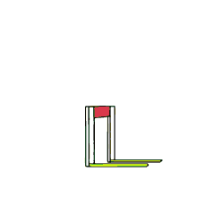

RESUMO DE QUALIFICAÇÕES
estudante do Senac, Unip e Alura para trabalhar com engenharia front-end, Inglês Intermadiário-avançado para comunicação, escrita, leitura e conhecimentos a nível de usuário do Pacote Office. Destaco:
-
✅ Resiliência em lidar com obstáculos.
-
 ✅ Organizado para agilizar e facilitar as atividades do trabalho.
✅ Organizado para agilizar e facilitar as atividades do trabalho.
EXPERIÊNCIAS PROFISSIONAIS
- 01/2019 a 07/2019 CORREIOS – Carteiro
Responsável pela entrega de cartas simples e registradas, pacotes;
Organização de cartas; Indução de cartas registradas e cartas simples ao remetente no sistema de
informações; Descarte de cartas inválidas; Atendimento ao cliente.
FORMAÇÃO ACADÊMICA
Técnico em Análise de Sistemas – Senac – 01/2022 - 09/2023
Técnico em Análise e Desenvolvimento de Sistemas – Senac – 01/2022 - 12/2023
IDIOMAS
Inglês: Intermediário-avançado
INFORMÁTICA
Desenvolvedor Front-end e Back-end com experiência em:
- - Linguagem Javascript, HTML5, CSS3, Typescript
- - Software Node.js, Git
- - Framework Bootstrap
- - Biblioteca jQuery
CURSOS DE APERFEIÇOAMENTO PROFISSIONAL
Front-End e Back-end - Alura - inicio: 10/21 - Atualmente - 200 horas


{kind=link}
{kind=link}